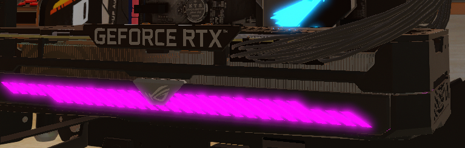

La carte graphique est indissociable de l’affichage d’un écran. Ce dernier y est directement connecté.
Elle veille également à alléger la charge du processeur.
Elle permet ainsi de parcourir les fonctionnalités de son système d’exploitation,
de réaliser du montage vidéo et de la modélisation 3D ou encore de prendre en charge les graphismes d’un jeu vidéo.
Pour qu’elle fonctionne dans de bonnes conditions, la mise à jour de la carte graphique est essentielle
Elle évite les problèmes de scintillement, les images figées ou, plus communément, les écrans noirs.
La fonction première de la carte graphique reste simple.
Elle permet l’affichage de graphismes 2D ou 3D sur l’écran d’un PC.
La production et la qualité de l’image dépendent de sa mémoire, de sa fréquence, de la connectique et des caractéristiques de l’écran,
notamment la résolution HD, Full HD ou 4K. À noter que certains modèles récents remplissent également les fonctions d’une carte son.
Afin de profiter de performances optimales, il est donc essentiel de bien connaître sa carte graphique, ainsi que ses particularités techniques.
| Source | *Image provenant du jeu "PC Building Simulator". |